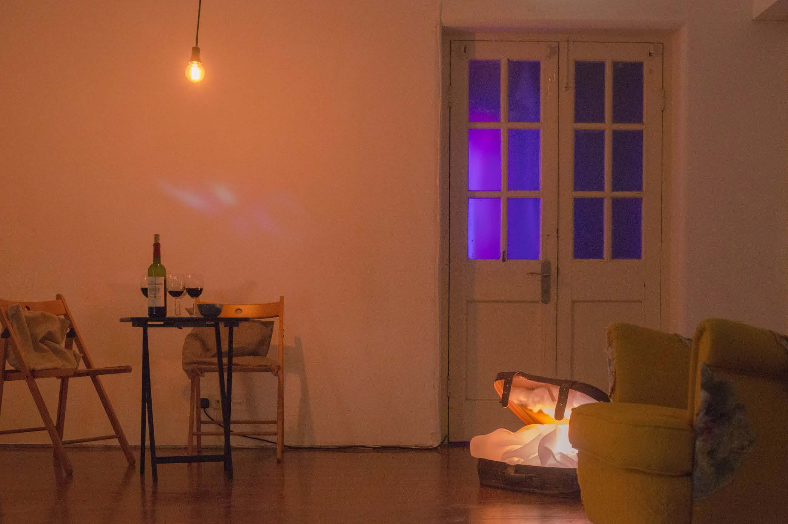
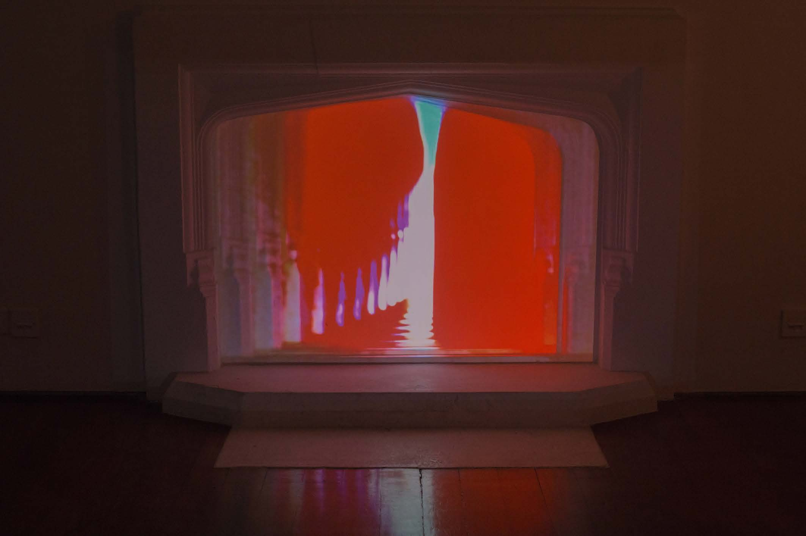

Where Shall We Meet Tonight?
Immersive Art Installation
2018/12
Transcultural Collaboration: Spoken/Unspoken
Academy of Visual Arts, HKBU
This is an invitation for the audience to think about what is home for themselves. We try to build up an immersive and intimate space for the audiences by sharing four stories picked up from our personally experience but slitted into pieces for one fragmentary narration surrounding in the space, by that the audiences can build up their own version of the storyline. We try to make a home model in-between ideal and reality by faking the real furnitures and installing an interactive scenario. The audiences can enter it without rules and distance; and do everything they want as cozy as at home. We try to slow down the pace of the people coming in and magnify the moment that pause their life for a simple question but hard to answer – What is home? Home can be a place or an objective that arise your emotion towards the self-identification and the self-growth. Home can be a sense of being or a shell that embrace you when you need it. Home can be the motherhood, the childhood, or the livelihood, or can be the continually memory construction within your life. Home can be everything but one thing floating with you.
Collaborated with Claudio Rainolter, Jiaming August Liao, Jingying Zhang
Project Website: Transcultural Collaboration project page


